Batarya Revizyonu & Hücre Değişimi
Zayıflayan veya şişen lityum-iyon hücreler tek tek test edilir; yalnızca arızalı çıkan hücreler orijinal spesifikasyona uygun yenileriyle değiştirilir.
7 hücreye kadar analizDyson Şarjlı süpürgelerinizde profesyonel batarya hücre yenileme ve pil destek hizmeti sunuyoruz. Bileşen bazlı onarım ile cihazınızı yeni gibi teslim ediyoruz.
Dyson Özel Servis olarak yaklaşımımız; her cihazı fabrika şemasına göre söküp, arızayı devre ve hücre seviyesinde teşhis etmektir. Dijital motor mimarisinden multisiklon hava yoluna, BMS kart kalibrasyonundan HEPA filtre sızdırmazlığına kadar Dyson'ı Dyson yapan her katmanı; orijinal toleranslara sadık kalarak, bileşen bazlı ve ölçülebilir bir onarım disipliniyle ele alıyoruz. Amacımız parça değiştirmek değil, cihazın fabrika çıkışındaki performansını geri kazandırmaktır.
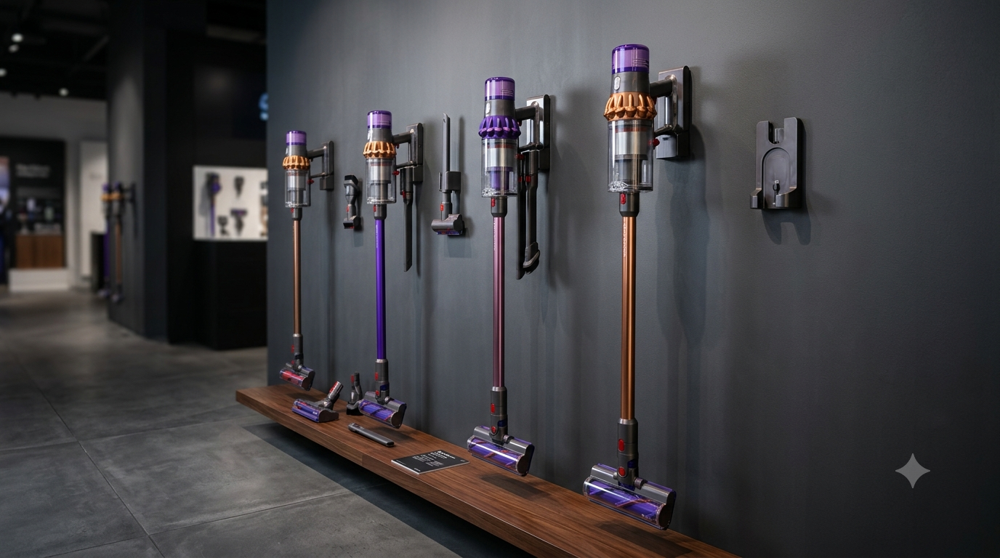
Komple parça değişimi yerine, arızanın kaynağına iniyoruz. Aşağıdaki her kalem, teşhis sonrası ayrı ayrı fiyatlandırılır.
Zayıflayan veya şişen lityum-iyon hücreler tek tek test edilir; yalnızca arızalı çıkan hücreler orijinal spesifikasyona uygun yenileriyle değiştirilir.
7 hücreye kadar analizDijital motorun rulmanları, fırçaları ve sargıları test edilir; ses, titreşim ve emiş kaybı şikayetlerinde motor yeniden dengelenir.
125.000 rpm'e kadar testŞarj almayan veya aniden kapanan cihazlarda batarya yönetim kartı ölçülür, hatalı lehim ve sensör noktaları onarılır.
Kısa devre, yanık iz ve soğuk lehim kaynaklı arızalarda devre kartı bileşen seviyesinde incelenir ve onarılır.
Çatlayan gövde parçaları, kırılan kilit mekanizmaları ve aşınan bağlantı noktaları orijinal toleranslarda onarılır.
Dolanan saç, aşınan fırça tüyleri ve sessiz çalışmayan soft roller mekanizmaları temizlenir veya yenilenir.
Basıldığında tepki vermeyen veya takılan tetik mekanizmaları sökülür, temizlenir ve gerekiyorsa değiştirilir.
Emiş kaybının en sık nedeni olan cyclone kanalları ve toz haznesi contaları incelenir, hava kaçakları giderilir.
Filtre yıkama, değişim ve sızdırmazlık testi yapılır; filtre kaynaklı emiş düşüşü ve koku şikayetleri giderilir.
Şarj olmayan cihazlarda adaptör, kablo ve gövde üzerindeki şarj portu test edilir; gevşek veya kırık pimler onarılır.
Kayıp veya aşınan uç, boru ve aksesuarlar orijinal ölçülerde tedarik edilir.
Teslim öncesi her cihazın emiş gücü, çalışma süresi ve motor devri ölçülerek fabrika standardında test edilir.
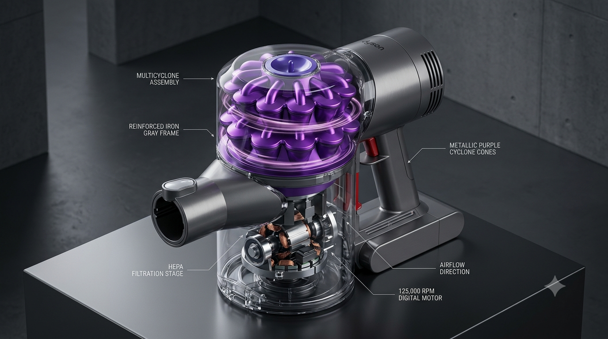
Dyson'ın imza teknolojisi olan yüksek devirli dijital motor, saniyede binlerce kez dengede tutulan bir rotor mimarisine sahiptir. 125.000 RPM dijital motor onarımı sürecinde rulmanlar, rotor dengesi ve motor sürücü kartı ayrı ayrı test edilir; titreşim ve ısınma kaynaklı verim kayıpları giderilir. Emiş gücünün asıl kaynağı olan çok kademeli Dyson multisiklon tıkanıklık açma işlemiyle hava kanalları tam sızdırmazlığa kavuşturulur, siklon konileri arasındaki mikro toz birikintileri temizlenir.
Onarım sonrası her ünite, fabrika devri referans alınarak HEPA filtre sızdırmazlık testinden geçirilir; emiş gücü ve motor devri ölçülüp raporlanır.
Cihazınızı 0-24 saat içinde tüm alt sistemleriyle test eder, arızanın kök nedenini net şekilde tespit ederiz.
Yapılacak işlemi ve net fiyatı bildiririz. Onay vermeden hiçbir parça değişimi veya onarım başlamaz.
Bileşen seviyesinde onarım ve orijinal toleranslara uygun parça değişimi, kalite kontrolüyle birlikte uygulanır.
Emiş gücü, çalışma süresi ve motor performansı ölçülür; cihaz garanti belgesiyle teslim edilir.
Lityum batarya teknolojisi ve gelişmiş Dyson mimarisi, standart elektronik tamirinden tamamen farklı bir uzmanlık gerektirir. Bu yüzden odağımızı dağıtmıyor, sadece bu ürün ailesine odaklanıyoruz; bu sayede daha isabetli arıza teşhisi, garantili Dyson batarya tamiri ve çok daha düşük maliyetli çözümler sunuyoruz.
Dyson cihazlarında batarya ve devre mimarisine odaklanıyoruz.
Pahalı parçaları komple değiştirmek yerine, arızalı hücre veya entegreyi onararak bütçenizi koruyoruz.
Teşhis sonrası net fiyat teklifi alırsınız; onay vermeden işlem başlamaz, sürpriz ücret çıkmaz.
Değiştirilen parça ve yapılan işçilik 90 gün garanti kapsamındadır.
Çoğu arıza 0-24 saat içinde teşhis edilir; onarım süresi işlemin kapsamına göre netleşir.
İstanbul dışından gönderilen cihazlar için kargo kabul ve iade süreci sunuyoruz.
Dyson batarya yenileme sürecimizde her pil paketi sökülüp hücre bazında test edilir. Amacımız komple paket değişimi değil; yalnızca kapasitesi düşen veya arızalı hücreleri, fabrika spesifikasyonuna uygun high-drain lityum-iyon pil revizyonu ile yenilemektir.

Dyson V15 hücre değişimi gibi işlemlerde paket önce ısıl yapıştırıcıdan zarar vermeden ayrılır, ardından her hücrenin iç direnci ve kapasitesi tek tek ölçülür. Yalnızca toleransın dışına çıkan hücreler, orijinal kimyasal spesifikasyona uygun eşdeğerleriyle değiştirilir; sağlam hücreler paket dengesini korumak için yerinde bırakılır.
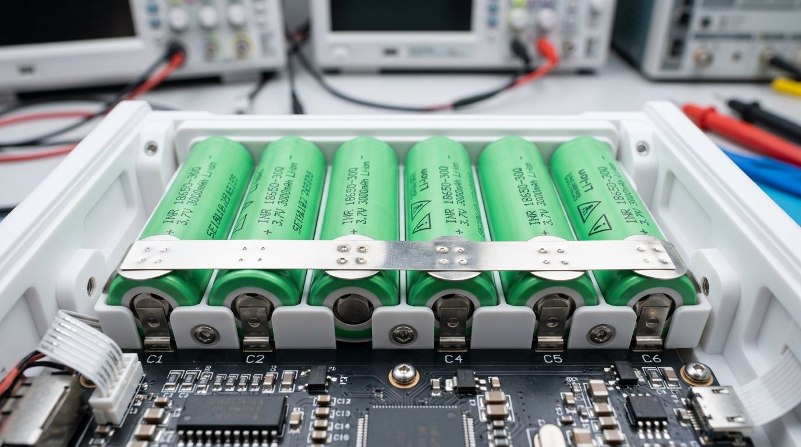
Hücre yenilemesinin ardından Gen5 orijinal BMS kart kalibrasyonu uygulanır; şarj/deşarj eğrileri, sıcaklık sensörleri ve hücre dengeleme devresi fabrika referans değerlerine sıfırlanır. Bu sayede batarya, cihaza yanlış kalan ömür veya ani kapanma gibi sorunlar yaşatmadan güvenli ve isabetli şekilde çalışır.
Hücre Bazlı
Test edilen her hücre ayrı ayrı raporlanır, gereksiz parça değişimi yapılmaz.
Orijinal Spesifikasyon
Yenilenen hücreler, fabrika kimyasal ve kapasite standardına uygun seçilir.
90 Gün Garanti
Hücre ve BMS kalibrasyon işçiliği garanti kapsamında teslim edilir.
Dyson V6'dan Gen5detect'e kadar en yaygın kablosuz süpürge modelleri için batarya yenileme, motor onarımı ve elektronik kart tamiri hizmeti sunuyoruz. Modelinizi seçerek sık görülen arızaları, kronik sorunları ve teknik servis çözümlerini inceleyebilirsiniz.
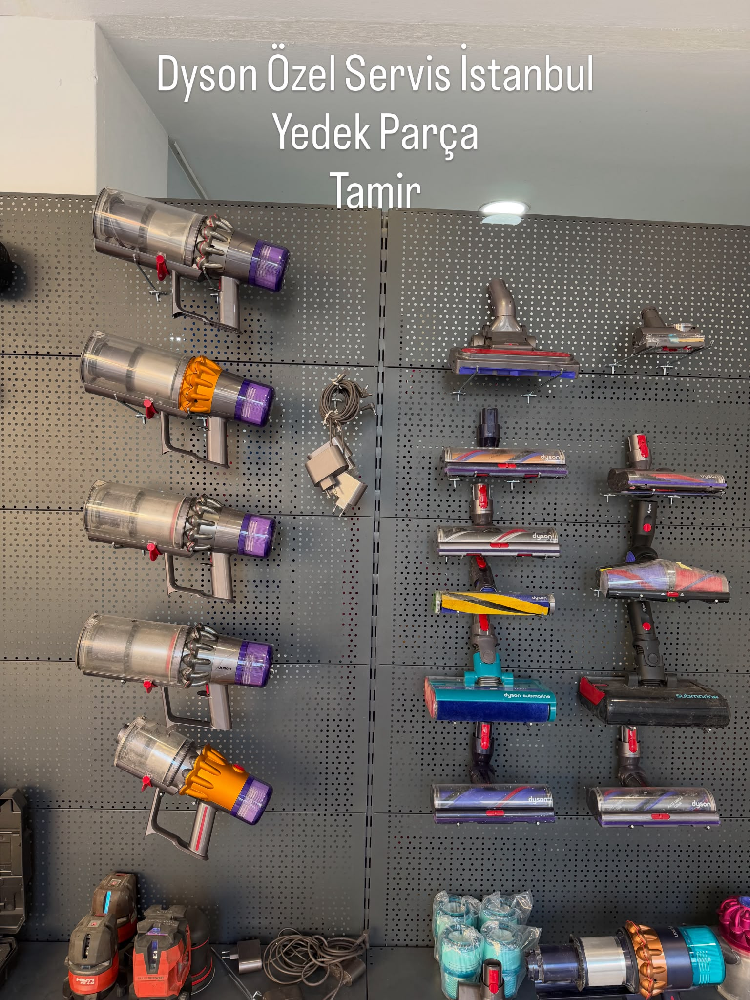
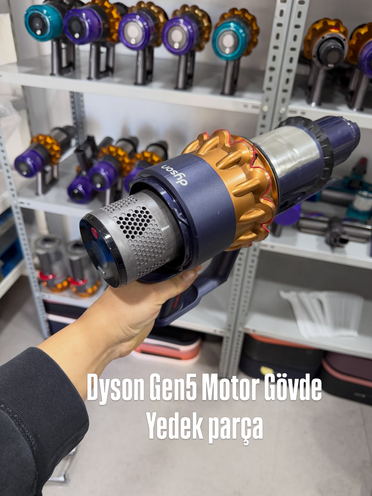
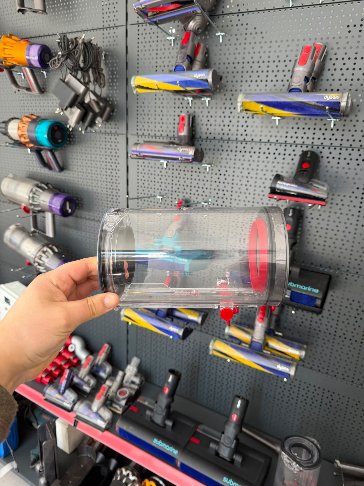
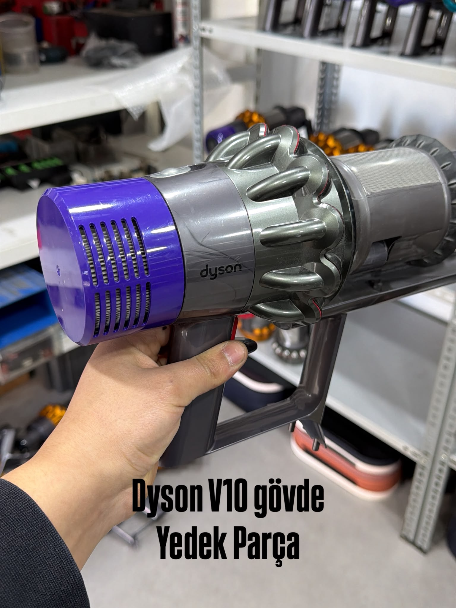
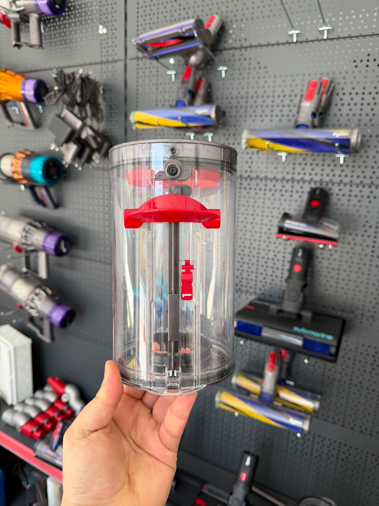
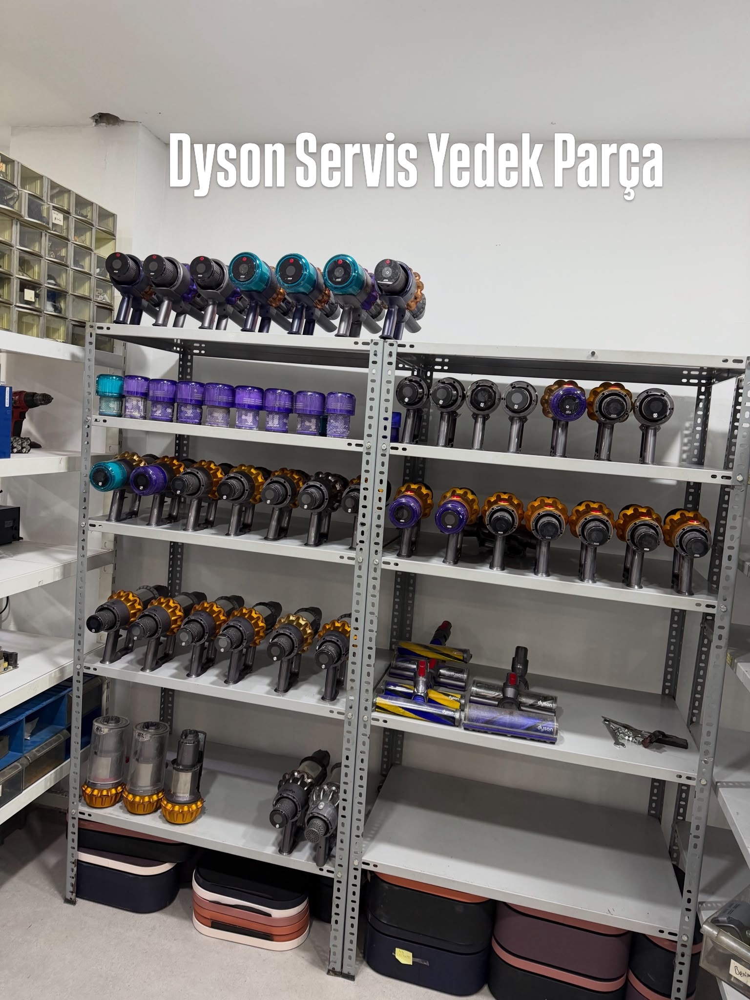
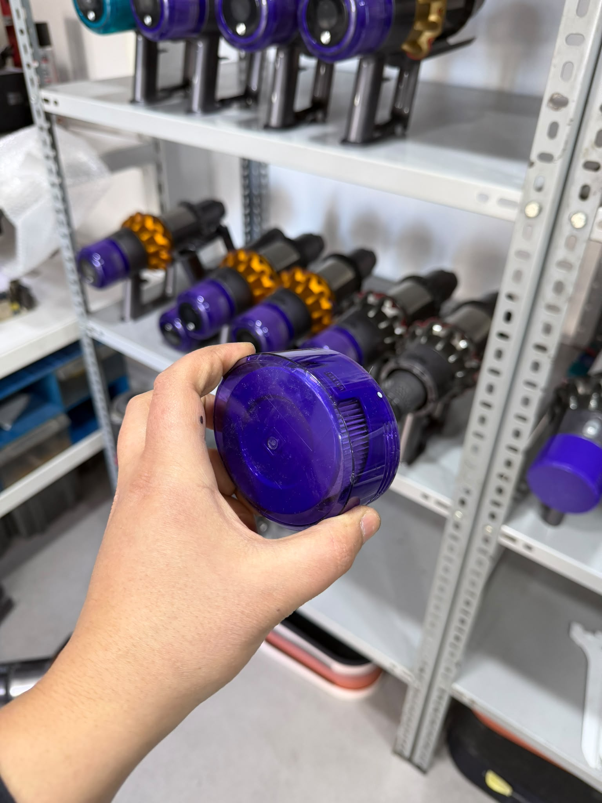
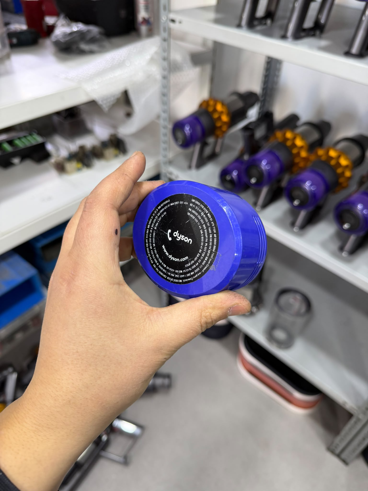
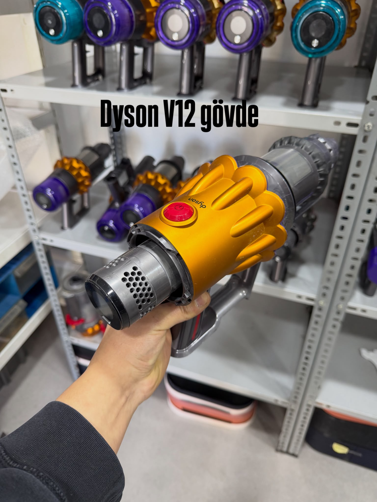
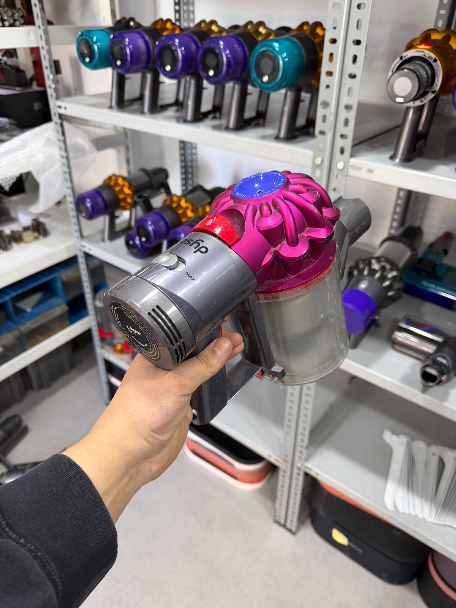
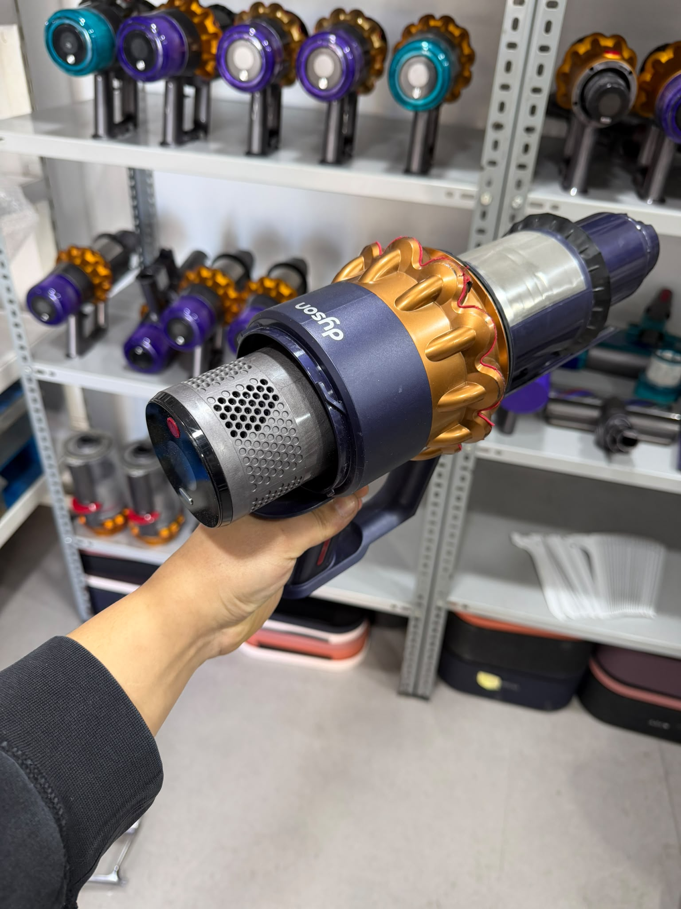
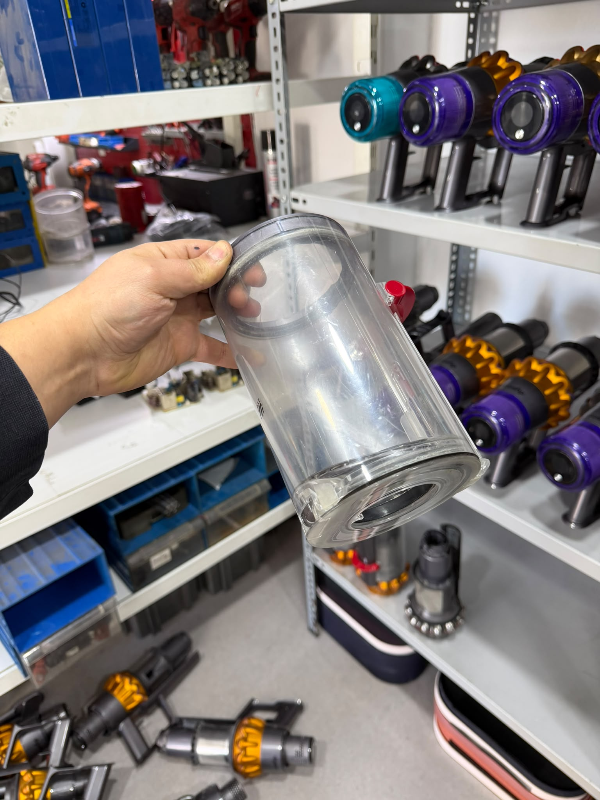
Her onarım, atölyemizdeki hassas ölçüm cihazlarıyla desteklenen bir kalite kontrol sürecinden geçer. Hücre iç direnç ölçer, motor devir test standı ve hava akış ölçüm ünitesiyle; yapılan 125.000 RPM dijital motor onarımı, Gen5 orijinal BMS kart kalibrasyonu ve HEPA filtre sızdırmazlık testi gibi işlemler, teslimattan önce fabrika toleranslarıyla karşılaştırılarak doğrulanır. Laboratuvar sürecimiz, göz kararı onarımın aksine ölçülebilir ve tekrarlanabilir sonuçlar üretir.
İç Direnç Ölçümü
Hücre bazlı, mΩ hassasiyetinde
Motor Devir Testi
Fabrika RPM referansına göre
Hava Akış & Sızdırmazlık
HEPA filtre ve conta testi
BMS Kalibrasyon
Şarj/deşarj eğrisi doğrulama
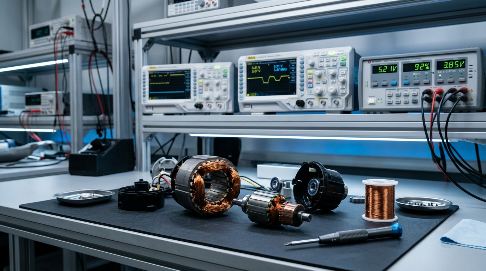
Bizimle doğrudan telefon veya WhatsApp üzerinden iletişime geçebilirsiniz.
Telefon & WhatsApp
Adres
Mahmutbey, İnönü Cd. 61/A, 34218 Bağcılar/İstanbul
Çalışma Saatleri
9.00 - 19.00